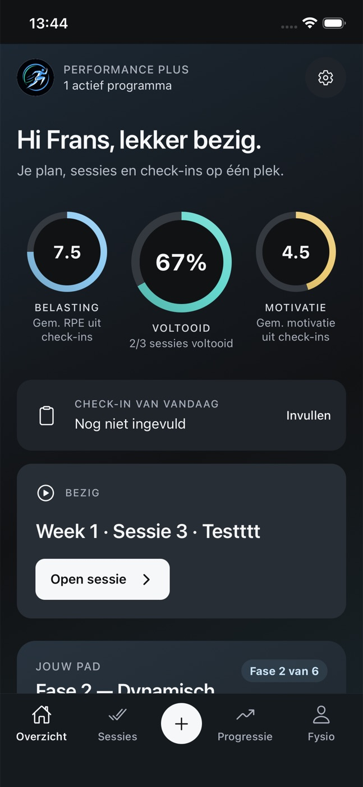

Ontwerpronde 11 · op basis van de huidige website
Twee richtingen.
Zes appstijlen.
De lichte en donkere versie, met nieuwe teksten en onderbouwing bij de werkwijze. Onderaan vind je zes appstijlen: drie praktijkvoorbeelden en drie extra kleurconcepten. Op mobiel staat ieder voorbeeld in het midden.


Optie 01
In beweging
Licht grijsgroen en veel ruimte voor fotografie. Van je programma in de app naar het inzicht voor de fysiotherapeut. Rustig, helder en dichtbij de praktijk.
- Jouw begeleiding. Ook buiten de praktijk.
- Lichte vlakken, groene accenten en ruime fotografie
Optie 03
Terug naar het veld
Een donkere sportfoto, stevige koppen en blauwgrijze accenten. Dezelfde app en werkwijze, met de nadruk op revalidatie, sporthervatting en doortrainen.
- Van revalidatie naar prestatie.
- Grafiet, gedempt blauw en grote sportbeelden
In beide opties
- Foto als opening, gevolgd door de vijf appstappen van Kaylee
- Het plusje met eigen trainingen, dagelijkse check-ins en ademhaling
- Rehab en performance, met contact met de eigen fysiotherapeut
- Een compact dossier met ringen, sessieverloop en een trendvoorbeeld
- Verslaglegging met cliëntinvoer en ruimte voor de fysiotherapeut
- Onderbouwing vanuit KNGF, Aspetar en onderzoek naar oefenapps
- Zes appstijlen onderaan, met pijlen en horizontaal schuiven
- Contact via info@performanceplus.nl